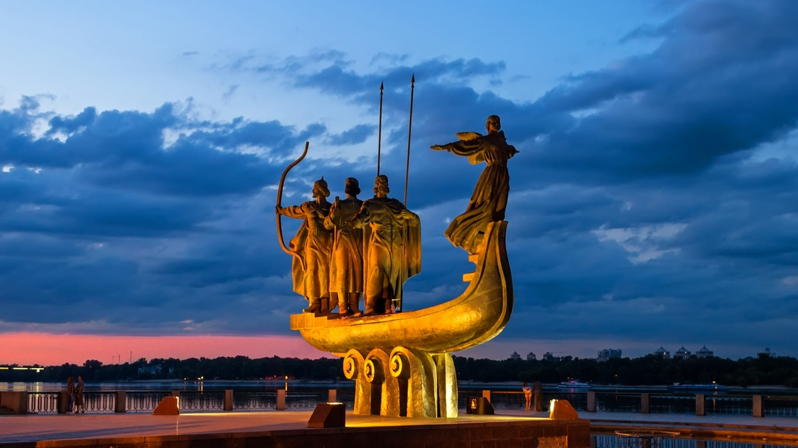
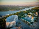
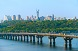
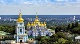

The capital of Ukraine

Kyiv
- the capital and largest city of Ukraine.
It is located in the northern part of Central Ukraine, serving as the administrative center of the Kyiv Oblast,
situated on the banks of the Dnieper River.
The seventh largest city in Europe by population.
History
Founded at the end of the 5th to the beginning of the 6th century.
It was the capital of the Polans, Kyiv Rus, Ukrainian People's Republic, Ukrainian State, and Ukrainian Soviet Socialist Republic.
It also served as the administrative center of the corresponding principality, the Lithuanian-Polish voivodeship, Cossack regiment,
Russian governorate, and German general district.
According to the legend in the "Primary Chronicle," Kyiv was founded by the legendary Polian prince Kyiv along with his brothers
Shchek and Khoryv and their sister Lybid.
In 2005, the capital of Ukraine became the host city for the 50th Eurovision Song Contest, and in 2012,
it was one of the four Ukrainian cities that hosted the UEFA European Football Championship EURO 2012.
Interesting historical places in the capital
Associated with significant events in Ukraine's history, these places and monuments preserve the memory of ancestors.
One of them is the Golden Gate, located near the Opera Theater, on Volodymyrska Street, 40A.
This monument is a defensive structure from the times of Kyivan Rus, which served as the main entrance to the city.
It consists of an original preserved part and a reconstructed section. The Gate was built by order of Yaroslav the Wise.
Another crucial period in history that should not be forgotten is the infamous Babi Yar. Situated near Dorohozhychi metro station,
it became a mass grave for over 100,000 Kyiv residents during the war from 1941 to 1943.
Squares, interesting streets, and parks.
Among the free places in Kyiv where you can stroll and have a great time, various parks, squares, and streets stand out as particularly interesting options.
These places offer free admission and are perfect for leisurely walks and enjoying the city's atmosphere.
One of the most well-known streets in the city is Khreshchatyk.
It's not only prestigious but also hosts popular folk celebrations and festivities.
Additionally, Khreshchatyk holds the distinction of being the shortest central street in Europe.
Like in other European centers, it's always bustling with people, musicians playing, folk artisans showcasing their skills,
dancers, jugglers, and other artists. Overall, life here is vibrant and never stops for a moment!
Kyiv is continuously developing and becoming more beautiful and welcoming to visitors.
New attractions appear with enviable regularity.
One recent highlight is the Pedestrian-Cyclist Bridge over Volodymyrska Hill - the Klitschko Bridge or Glass Bridge,
as it's sometimes called by the locals.
So, whether you're exploring the lively atmosphere of Khreshchatyk or discovering new developments like the Klitschko Bridge,
Kyiv is a city that embraces its rich culture and offers a diverse range of experiences to enjoy without any cost.
Read more here: Information about Kyiv
Graphic links:


